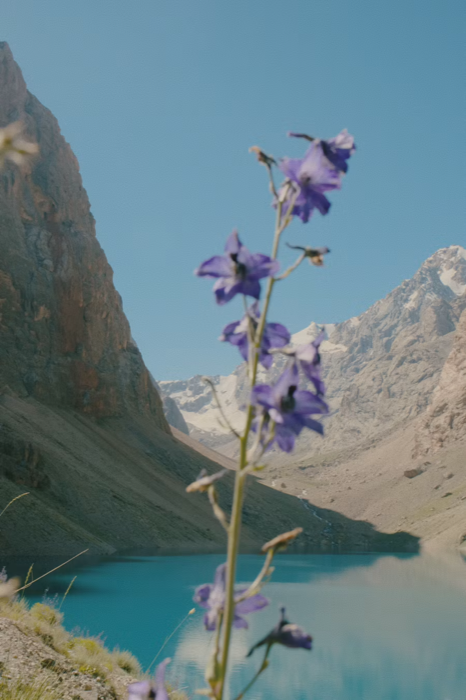
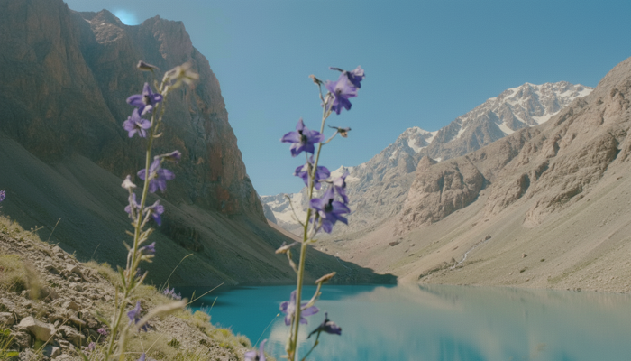
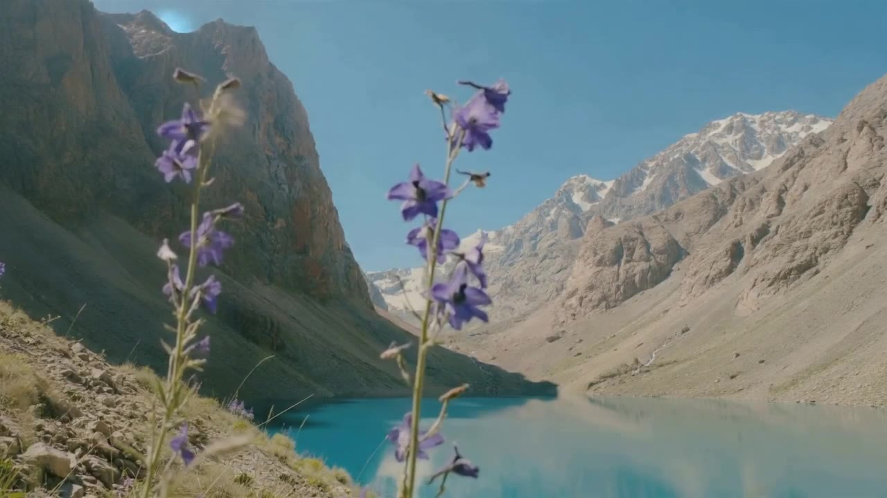

共有資料の一覧 ／ 確認ページ #634 バーチャルウインドウを商品にする（写真→30分ループ→Gumroad）
#634 バーチャルウインドウを商品にする（写真→30分ループ→Gumroad）
2026-09-07 実装・main合流・本番(GitHub Pages)反映まで実測確認
Unsplashの縦長の花・湖・雪山写真をアウトペイントで横長(16:9)に拡張し実写に見える1枚を作成。そこから水面・花の揺れがごく微かに動く定点動画を10分＋30分ループの2尺で書き出し、環境音(波・風系)を重ねた。人物・台詞・BGMなしの「バーチャルウインドウ」の完成品1本が通しでできた。30分版は前セッションの出力ファイルがmoov(動画の目次)欠落で壊れていたため、有効な10分版を3周ストリームコピーして正規の30分ファイルに直した(再エンコードなし=追加コストゼロ)。
② 数字
1800秒30分ループ版の長さ(実測)
298MB30分版ファイルサイズ
1280x720解像度
3枚使ったUnsplash元写真の数
③ 実データでのスクリーンショット
改変前(Unsplash元写真・縦長900x1350)
改変後(アウトペイントで横長1344x768に拡張)
動画の代表フレーム(10分版・5秒地点)
花と湖の定点シーン。人物・字幕なし
④ 押せるリンク
⑤ 何をどう確かめたか
| 確認項目 | 結果 |
|---|
| 壊れていた30分ファイルの修復 | できた(moov欠落を発見し10分版の3周ループで正規化) |
| 写真のアウトペイント(縦→横16:9) | できた(花の写真で実写に見えるレベル) |
| 水面・花の揺れの動き | 花・葉の揺れは2フレーム比較で確認。水面の動きは静止画比較では未確認、動画本編の目視要 |
| 環境音(波・風)の生成 | 22秒分のwavが既にあった(前セッション作成分) |
| 3パターン(海/山小屋/リゾート)の量産 | 未着手。今回は1本(花+湖)のみ完走 |
| Gumroad出品 | 未着手。APIキー/ログイン情報がこの環境から見つからずコード側での自動作成は不可。価格案(単品)は決定済み、出品作業のみ残る |